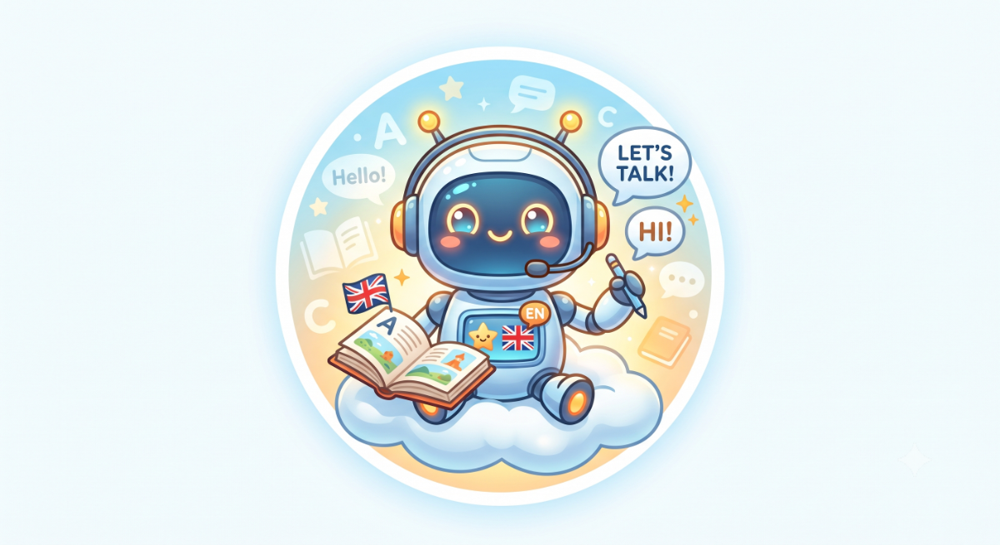

Fluenta превращает то, что вы читаете, в то, что вы можете сказать
Четыре присланные позы взял в работу: шахматка в файлах была нарисована пикселями, а не прозрачностью — вырезал фон, убрал водяной знак, выровнял всех по одному масштабу и центру. Ниже Люмен уже двигается кодом. Осталось дособрать четыре позы по промптам — рамки под них внизу.
Живой прототип
{{ stateHint }}
{{ subLabel }}
zz
{{ typed }}|
{{ bubbleMeta }}
Пока рамки пустые — двигается сама рамка. Как только в позу перетащена PNG без фона, анимация применяется к персонажу: покачивание, наклон к пользователю, прыжок радости, пульс «слушаю», сон с «z-z-z».
Что нужно от картинок, чтобы анимация работала
{{ r.mark }}{{ r.text }}
Ваш референс
из него берём внешность

Что оставляем: чиби-робот, округлая бело-голубая голова-шлем, тёмно-синее глянцевое «лицо»-визор, крупные голубые глаза с блёстками, румянец, две антенны с жёлтыми огоньками, оранжевые наушники с микрофоном, экран на груди.
Что убираем: белый круг-стикер, фон-градиент, облако, флаги, готовые реплики «Hello / Let's talk» — текст рисует интерфейс, иначе он не переводится и не меняется.
Промпты: 10 поз + 2 кадра для мимики
Сначала сгенерируйте «мастер-промпт» — он задаёт внешность. Затем каждую позу тем же генератором, добавляя строку позы к мастеру. Кнопка «Копировать» кладёт готовый текст в буфер.
Шаг 1 · мастер-промпт
Внешность персонажа — эту часть повторяйте в каждом запросе
{{ master }}
Русский смысл: чиби-робот-компаньон для приложения по языкам, мягкий векторный стиль детской книги, бело-голубой корпус, тёмно-синий визор с большими голубыми глазами, оранжевые наушники с микрофоном, антенны с жёлтыми огоньками. Строго: фронтальный вид, одна и та же камера и масштаб, прозрачный фон, без текста, без подписей, без круглой рамки, без тени под ногами.
{{ p.id }}{{ p.name }}{{ p.tag }}
{{ p.short }}
{{ p.use }}
Анимация: {{ p.anim }}
{{ p.prompt }}
Где он появляется и что делает
по одному поводу на раздел — иначе надоест
{{ pl.where }}{{ pl.pose }}
{{ pl.what }}
{{ pl.rule }}
Готовые PNG перетащите в рамки на этой странице — и скажите «встрой Люмена», я подключу его к разделам